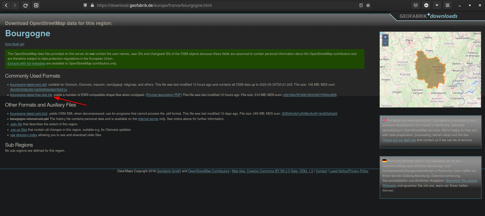
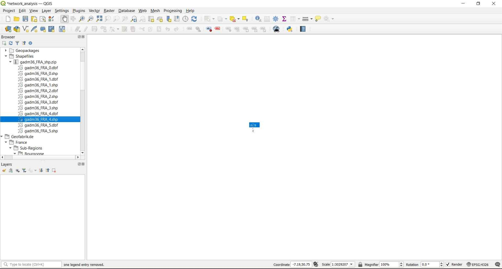
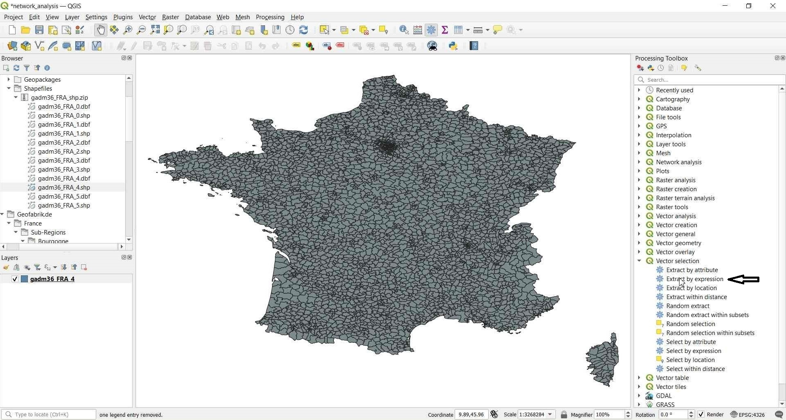
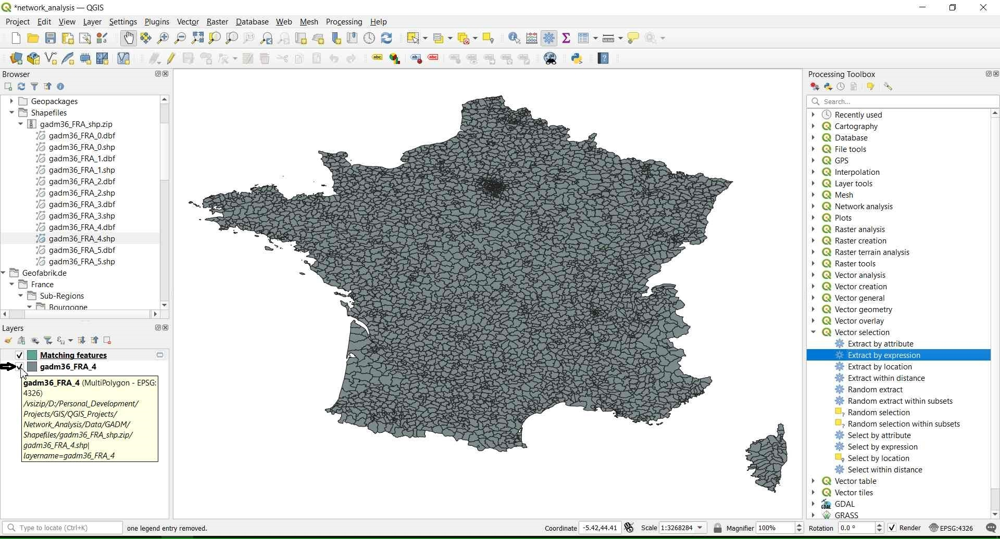
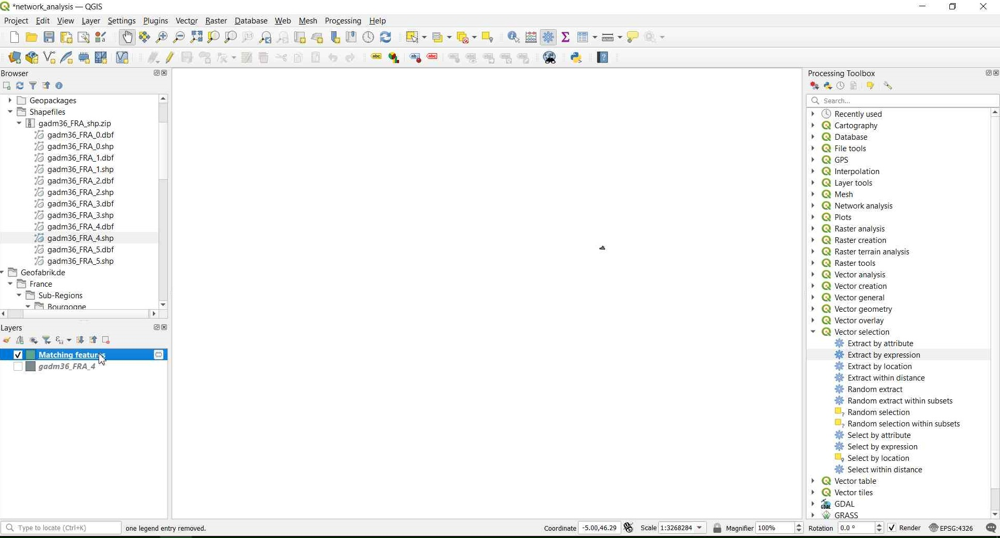
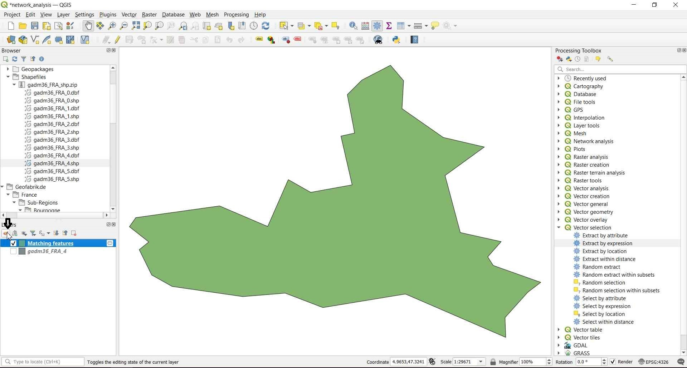
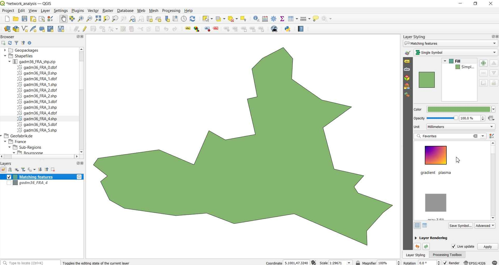
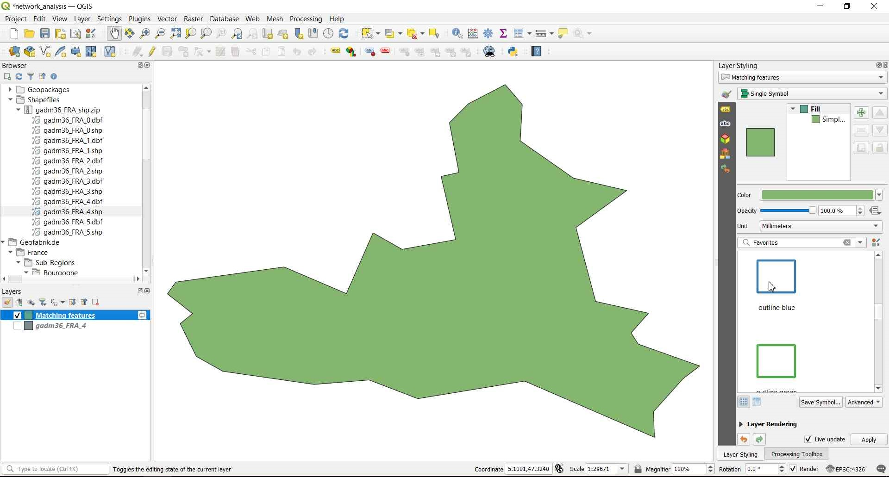
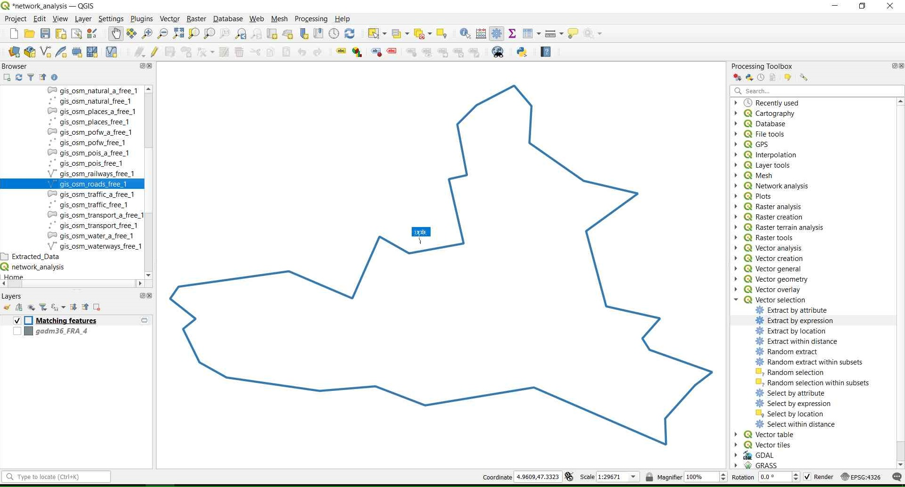

Point to Point Analysis (Shortest path):
- Point-to-point network analysis is one of the most used network analysis, we use it to calculate the shortest or fastest route between two points (Starting and Ending points).
Goal:
- Calculate the closest route between two points in the city of Dijon using OSM (Open Street Map) free data.
Download the required data:
Data Sources:
- First go to GADM website by clicking on the following link GADM and from the Country drop down menu choose France. Then click on Shapefile to download it:

- Now go to Geofabrik website to download free OSM data exactly the Bourgogne region of France where Dijon city is located by clicking on this link Geofabrik

- Save the data files and extract the zip files in any location you want (you can leave it in the downloads folder for easy access to it).
Step 1: Add the gadm36_FRA_4.shp layer:

Step 2: In QGIS window open the Processing menu and click on Toolbox:
Step 3: From the Processing Toolbox select Vector selection then Extract by expression option which allows us to extract data to a new layer by using an expression:

Step 4: The Extract by expression window will open, now click on the Expression icon:
Step 5: In the search box type name, then, double click on the NAME_4 from Fields and Values:
Step 6: Now complete the expression as follow (“NAME_4” = ‘Dijon’) to extract the Dijon city boundaries and then click Ok:

Step 7: Click Run to run the algorithm, A new layer called Matching features will be created:

Step 8: Turn off the gadm36_FRA_4.shp layer and right click on the Matching features layer then select Zoom to layers to see the result:




Step 9: Open the Styling panel to style the newly created layer, then choose the outline blue style:


Step 10: Now we can add the second data layer: gis_osm_roads_free_1.shp:
Step 11: From the Processing Toolbox > Vector selection choose Extract by location tool:
Step 12: The Extract by location window will appear. In the Extract features from choose the gis_osm_roads_free_1.shp layer. And in the Where the features (geometric predicate) check only (are within) option, and in By comparing to the features from choose the Matching features layer, then click Run:
Step 13: Turn off the gis_osm_roads_free_1.shp layer to see the results well: